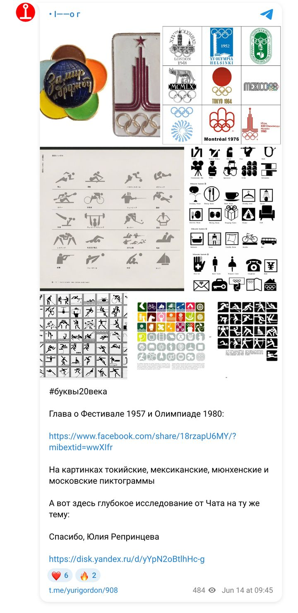
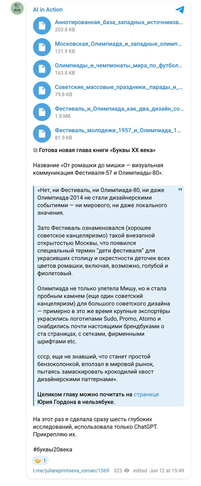

Книга «Буквы XX века» · май — июнь 2026 · цикл 10
«Давай я скину идею, а ты превратишь её в промпт»: описать и сравнить оформление Фестиваля молодёжи 1957 года и Олимпиады 1980 года, сопоставить с западным оформлением того же времени; нужны и глубокие исследования, и выжимка.
Серия из шести брифов и шести Deep Research: советские массовые праздники, олимпийские дизайн-системы 1968–1980, чемпионаты мира, аннотированная база западных источников — и единая аналитическая глава на их основе.
ChatGPT Deep Research
Ниже — брифы, которые получали модели, готовые отчёты в PDF и документы, а также публикации по ходу работы.
Брифы
Мой документ · текст, который получала модель · 21.05.2026
На основе приложенных исследовательских отчетов подготовь единую аналитическую главу / доклад на тему:
Фестиваль и Олимпиада как два дизайн-события: от советского массового праздника к международному event branding
Собрать результаты нескольких исследований в цельный, логичный, хорошо структурированный текст.
Главная мысль, которую нужно проверить и раскрыть:
Фестиваль молодежи и студентов 1957 года и Московская Олимпиада 1980 года можно рассматривать как две точки развития советского дизайна международного события. Фестиваль 1957 года связан с оттепельной праздничностью, молодостью, миром, открытием СССР миру и декоративным оформлением города. Олимпиада-80 показывает более зрелую, системную и институциональную форму event branding, где советская традиция массового праздника соединяется с международными олимпийскими стандартами, навигацией, пиктограммами, талисманом, сувенирной продукцией и телевизионной картинкой.
Писать как исследовательский текст для книги, лекции или выставочного каталога:
Мой документ · текст, который получала модель · 21.05.2026
Проведи глубокое исследование на тему:
Советские массовые праздники, парады и спортивные мегасобытия: визуальная организация, церемонии и городская среда
Сравнить визуальную и сценарную организацию советских массовых праздников с оформлением и церемониями Олимпийских игр и чемпионатов мира по футболу середины XX века.
Главная задача — понять, какие элементы советской праздничной культуры были перенесены в оформление Фестиваля молодежи и студентов 1957 года и Московской Олимпиады 1980 года, а какие элементы пришли из международного спортивного event branding.
Использовать:
Сделай отчет со следующей структурой:
Не сводить советский праздник только к пропаганде. Рассматривать его как сложную систему визуального управления пространством, телом, эмоцией, коллективностью и международным образом государства.
Мой документ · текст, который получала модель · 21.05.2026
Проведи глубокое исследование на тему:
Московская Олимпиада 1980 года и западные олимпийские дизайн-системы 1968–1980 годов: сравнительный анализ
Сравнить визуальную систему Московской Олимпиады-80 с западными олимпийскими дизайн-системами того же периода, особенно с Олимпиадой в Мюнхене 1972 года.
Главный фокус — понять, чем советский подход к олимпийскому дизайну отличался от западного модернистского подхода и в чем они были похожи.
Обязательно рассмотреть:
Особое внимание уделить Мюнхену-1972 как ключевому примеру системного модернистского олимпийского дизайна.
Проанализировать:
Сравнить спортивные пиктограммы:
Отдельно оценить:
Сравнить:
Сравнить:
Сравнить:
Сравнить, как дизайн выходил за пределы бумаги:
Использовать:
Сделай отчет со следующей структурой:
Не делать выводы на уровне “Запад — функциональность, СССР — идеология”. Это слишком грубо. Нужно показать сложнее:
Мой документ · текст, который получала модель · 21.05.2026
Проведи глубокое исследование на тему:
Олимпиады и чемпионаты мира по футболу как глобальные дизайн-события середины XX века
Понять, как Олимпийские игры и чемпионаты мира по футболу в середине XX века превратились из спортивных соревнований в комплексные дизайн-события: с эмблемами, плакатами, навигацией, церемониями, городской средой, сувенирной продукцией, телевизионной картинкой и международным брендингом.
Отдельно выяснить, когда и как СССР включился в олимпийское движение и чемпионаты мира по футболу.
Основной период: 1948–1980.
Особый фокус:
Проверь все даты по надежным источникам.
Обязательно рассмотреть:
Рассмотреть ключевые турниры 1950–1982 годов:
Особенно внимательно посмотреть:
Использовать:
Сделай отчет со следующей структурой:
Проверяй даты и не делай предположений без источников. Если по чемпионатам мира мало данных о навигации и городском оформлении, честно укажи лакуны.
Результаты
Публикации
Посты Юрия Гордона об этой главе и мои отчёты о работе над ней — в хронологии. Снимки постов сохранены на случай удаления; рядом — ссылка на оригинал.

